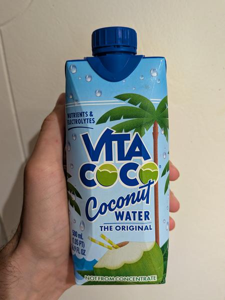

June 2025 · 16.9 fl oz · Still · Pasteurized · Added Sugar · Not Organic · Not from Concentrate
This is the original mass-produced coconut water to hit American shelves — way back in 2004. And somehow it has managed to stick around, even though it isn’t all that good. The company does get points for being a B corp, but their standard offering isn’t even organic. Nevertheless, if you’re at some random gas station in the middle of nowhere, this might be the only option on the shelf. 100% water but also a smidge of added sugar and some vitamin C.
A sweet and earthy water, Vita Coco’s original flavor lacks much in the green or floral departments. You won’t get depth in taste, nor will it be particularly refreshing — it is just too sweet and slightly acrid. Overall, it manages to not cross a line at any point, it just doesn’t excel at anything. I guess there’s a reason this is the default — it is shelf stable (heat pasteurized), somewhat cheap, and not likely to offend.
These coconuts are grown in habitats threatened by palm oil deforestation. If you find this site useful, consider donating to the Rainforest Action Network.